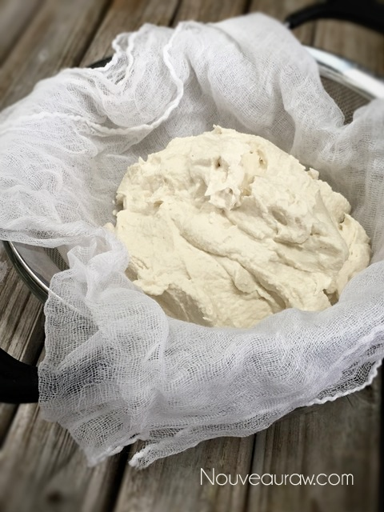
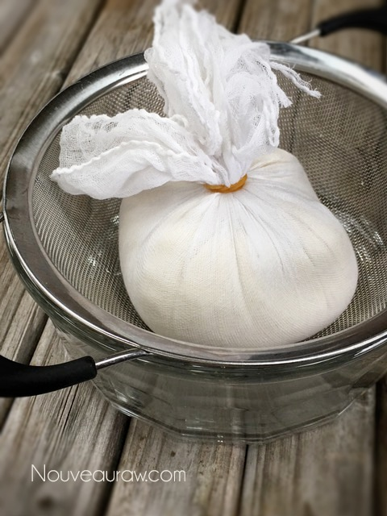
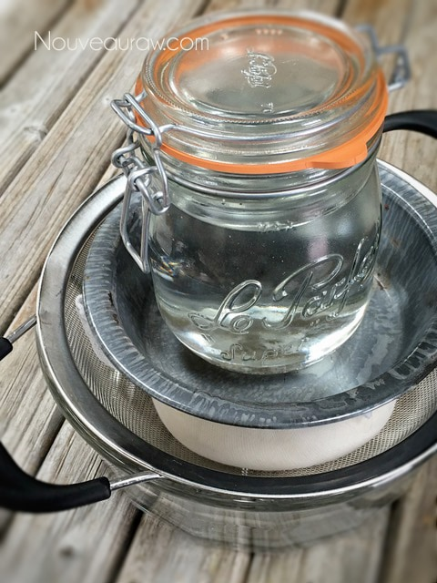
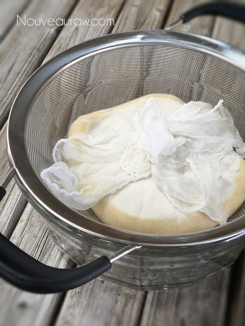
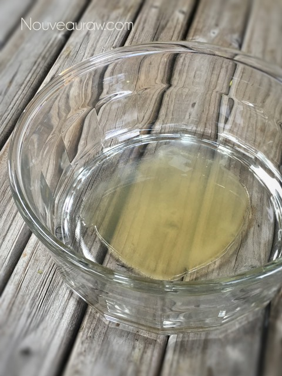
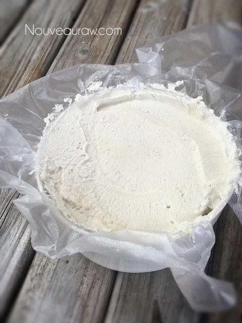

Cultured Almond Cheese with Rind

There are abundant nutritional therapies that can help you get to new levels of health. Culturing (fermenting) foods is just one of the many ways that I’ve found to have phenomenal benefits within my own journey.
When culturing foods, a symbiotic relationship between bacteria and yeasts is established. But I personally believe that the symbiotic relationship can go one step further, and that is one created between you and the food.
You can develop a culture that is truly unique to you, your environment, and even your personality. How do I achieve this? I sing to it… I talk to it… I pray over it… I share my health needs with it. That may sound really silly, but is it?
The transformative ingredient used to create this beautiful symbiotic relationship that I am referring to is the use of probiotics. We tend to think of bacteria as something creepy that causes diseases. But did you know that your body is full of bacteria, both good and bad? Probiotics bring in the “good” and “helpful” bacteria, as they work to keep your gut healthy. And I am all about the gut!
Most cheese recipes that use probiotics require anywhere from 1/4 to 1 teaspoon. Just open the capsules and tap the powder out into a measuring spoon.
Please click on the link in the ingredient list to see the one I used. If you don’t have any probiotics, you can substitute 1 Tbsp of lemon juice. You won’t get the same health benefits, but the acidity will create a semi-cheese-like-zing. This particular recipe serves as a wonderful cheese base. You can enjoy it as-is, or you can add your favorite flavors, such as herbs and spices. You can also forgo the rind process and enjoy this cheese with a softer texture.
You might be wondering how I achieved a white-colored cheese when almonds are the foundation of the recipe. The trick is to remove the skins of the almonds after they have been soaked. Not only will this create a white base to the cheese, it will reduce the bitterness which is often detected in the skins, and it also makes it easier to digest them. As a fun taste test, put a few almonds to the side that still have their skins on. After removing the skins from the rest of the almonds, taste one with and one without the skin.
I hope you enjoy this recipe. blessings, amie sue
Ingredients:
Yields: 2 cups (6-8 servings)
Preparation:
- First and foremost, make sure all the utensils and pieces of equipment you use for culturing are sterilized, to avoid growing bad bacteria.
- If you see any mold–fuzzy, black, or pink–it will need to be tossed.
- After soaking the almonds, drain, rinse, and remove the skins from the almonds.
- Blend the almonds, water, and probiotic powder in a high- powdered blender, until the almonds become as smooth as possible.
- Depending on your blender, this may take 1-4 minutes.
- If you own a Vitamix blender and it came with a tamper, use it. Otherwise, pause and scrape down the sides of the blender occasionally.
- If it is too thick and is not blending, add 1 tablespoon of water at a time until the mixture blends properly. Use the least amount of water possible.
- Don’t let the cheese mix get too hot during the blending process; this can kill the probiotics.
- Place a strainer inside of a bowl so that it can catch the “whey” that releases during the fermentation process.
- Line the inside of a strainer with cheesecloth (use two layers if the cheesecloth has a large weave), allowing several inches of the cloth to drape down around the sides of the bowl.
- Place the cheese mixture in the center of the cloth.
- Wrap up the sides of the cloth to cover the cheese and place a weight on top just heavy enough to slowly and gently push out the extra liquid.
- Place the cheese in a warm location to ferment for 8-72 hours. If the temperature is too cold, it inhibits incubation.
- Keep in mind there is no hard and fast rule about how long the cheese needs to culture. Your taste buds will have to guide you in determining the right length of time.
- The warmer the house, the faster it will ferment.
- Start taste testing around the 6-hour mark. I did mine for 24 hours with a house temp of 70 degrees.
- Keep in mind that the cheese will continue to ferment once placed in the fridge, but it slows to a crawl.
- Remove the cheese from the cheesecloth and place in a covered container and store in the refrigerator. Or place in a small mold (such as a Springform pan) and place in the fridge to chill and set up.
- If you wish to flavor the cheese with spices or herbs, do this after it has fermented and before placing it in the fridge.
Create a rind (optional):
- To create a rind on the outer surface of the cheese, shape the cheese with a ring mold and dehydrate for 10-24 hours at 115 degrees (F). If you don’t have a ring, you can line a bowl with plastic wrap, pack the cheese in, let it chill to firm up, then pop it out and move on to dehydrating it.
- The dry time will vary depending on how much moisture is left in the fermented cheese.
- Partway through the dry time, once it is holding its shape, remove the ring and continue to dry. This allows more of the surface to be exposed to the air.
- Store the cheese in the fridge for 1-2 weeks.







© AmieSue.com